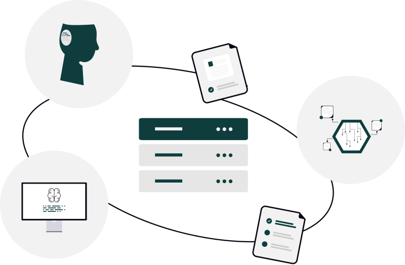

Donde la comunicación se convierte en conexión
Entendemos la comunicación como el intercambio de información entre dos o más
partes. Para que este proceso sea posible, se necesitan vínculos, dispositivos (hardware) y un
conjunto de reglas claras, conocidas como protocolos, que permiten que los datos se transmitan
correctamente.
A su vez, podemos decir que estamos conectados cuando ese intercambio se concreta: es decir, cuando
logramos recibir la información que solicitamos o interactuar con los datos en tiempo real. En
definitiva, hay conexión cuando existe una respuesta y un flujo efectivo de información entre los
dispositivos.
“Conectar es hacer que todo funcione.”

INTERNET
Internet es, básicamente, un intercambio de información en tiempo real a nivel global. Está formada por muchas redes interconectadas que permiten que los datos viajen de un lugar a otro y lleguen a distintos dispositivos.
ELEMENTOS DE CONEXIÓN
Para conectarnos a internet necesitamos varios elementos que trabajen en conjunto: dispositivos desde los cuales acceder (como una PC o un celular), una red de conexión (ya sea por cable o Wi-Fi) y equipos que permitan distribuir la señal, como el módem o el router.
-
 Router
Router
- Módem
- Conexión por cable (Ethernet)
- Dispositivo móvil
-
 Computadora
Computadora
- Navegador web
FUNCIONAMIENTO
Internet funciona a través de la transmisión de datos entre dispositivos. Esa información viaja en forma de paquetes que recorren distintas redes hasta llegar a destino. Para que este proceso sea posible, se utilizan protocolos que establecen cómo se envían, reciben y ordenan los datos, permitiendo que los dispositivos se entiendan entre sí.
Servicios e integraciones
En la ciudad existen distintos proveedores de internet, que se diferencian principalmente por la tecnología que utilizan y la forma en que llega la conexión al usuario. Cada opción tiene sus propias características en cuanto a velocidad, estabilidad y cobertura.
-
Express / Flow (Fiberlink)
Son de los más utilizados y funcionan principalmente a través de cablemódem, ofreciendo buena cobertura en zonas urbanas.
-
Claro / Iplan
Se destacan por el uso de fibra óptica, lo que permite mayor velocidad y estabilidad en la conexión.
-
WNET / Nubenet / Uncon / Rosario Internet
Proveedores que utilizan antenas o radioenlaces, ideales para llegar a zonas donde no hay infraestructura cableada.
La elección de un proveedor depende de la ubicación, la disponibilidad del servicio y las necesidades de uso de cada usuario.
Datos en informática
En informática, los datos son la información que se genera, se procesa y se transmite entre
dispositivos.
Todo lo que hacemos en internet —desde enviar un mensaje hasta ver un video— implica el
intercambio de datos.
Estos datos se representan de forma digital y se miden en unidades como bytes, kilobytes (KB),
megabytes (MB) o gigabytes (GB),
que indican la cantidad de información que se está utilizando o transfiriendo.
Datos e Internet
Los datos son los que circulan por internet. Viajan a través de la red en forma de señales, que pueden transmitirse por cables o por el aire (Wi-Fi). Por este movimiento constante de datos, es posible enviar mensajes, navegar por páginas o consumir contenido en tiempo real.
Mediciones
Para saber cómo funciona nuestra conexión a internet, utilizamos herramientas que permiten medir
su rendimiento en tiempo real.
Sitios como Speedtest o Fast.com muestran la velocidad de descarga (bajada) y de subida, es
decir, qué tan rápido recibimos y enviamos datos.
Estas mediciones nos ayudan a entender la calidad de la conexión y a detectar si el servicio
funciona de manera correcta.